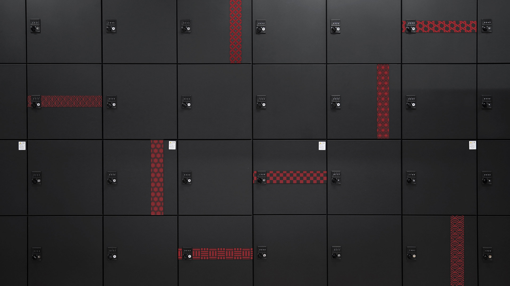

For this project, a co-design approach was used with the goal of identifying relevant insights for the design of a new storage signage system.
The objective of this project is to involve students in the signage design process through a co-design approach where they as users should be able to analyze the needs and possible scenarios to improve the Design Research Institute's storage service. During the weekly sessions, students were able to identifying relevant insights for the design of a new storage signage system. Through out the complete design process, participant students explored, conceptualized, prototyped and manufactured two distinctive signage systems. Aiming to get a deeper understanding of location and identification through user evaluation.
Collaborative relationships between different stakeholders are considered valuable methods for crossing disciplinary boundaries and developing appropriate solutions for a specific context. These relationships can be strengthened through co-design activities, where the users are included within the design team in order to incorporate relevant knowledge and expertise into the design decisions.
This signage design project was approached as a participatory and academic process where students from different design backgrounds (who are also users of the space), had the opportunity to work together and discuss the issues and opportunities provided by the new building in order to create a meaningful identification signage system that allows customization and flexibility.
Over the course of the project, the team has used a variety of methods to gain a deeper understanding of the communication and navigation of the space, common visitor practices, and particular requirements related to the limitations of the space. For this project, field observations, interviews, simulations and hands-on design activities were used to explore different perspectives and design strategies. Concept generation, prototype development and evaluation is an important part of the project.
For this co-design project a 3-part structured process was followed: 1.Pre-Design, 2.Co-Design and 3.Post-Design. Within the Analytical part of 1.Pre-design, two main steps were conducted: a) Discovering through Immersion and Exploration in the space as a starting point and b) Defining stage: Where students were able to define the user needs, make an extensive field research to make a scope and think about possible interventions. In the generative part 2. Co-Design the students followed 3 main steps: a).Framing the issue: in which they shared experiences from the user perspective, found opportunities, identified main challenges. b)Concept Ideation: Generation of proposals or possible interventions where students co-defined the important points to take into consideration and collectively made proposals c) Development & Prototype generation: A number of prototypes were generated and presented to receive feedback from users before implementation.After implementing the intervention, an evaluation stage was held 3.Post-Design. In this third stage two main steps were followed. a) Data collection: Participants obtained data as results from the user tests. b) Analysis and Evaluation: The results were analyzed to find new opportunities and limitations. In addition, a plan for future iterations of the process was created.
The objective of this project is to explore the identification of storage spaces through the use of brand identity elements such as color palette, logos, etc. For this proposal, a visual system was developed based on a series of brands of well-known establishments in Japan due to their user familiarity. The materials were printed on magnet to facilitate their installation without damaging the space.

The objective of this proposal is to facilitate the recognition of space based on the identification of visual elements and their direction. This research project proposes the exploration of spatial recognition patterns. The materials used include traditional Japanese patterns carefully selected and executed according to the color and contrast analysis.
customizable system
